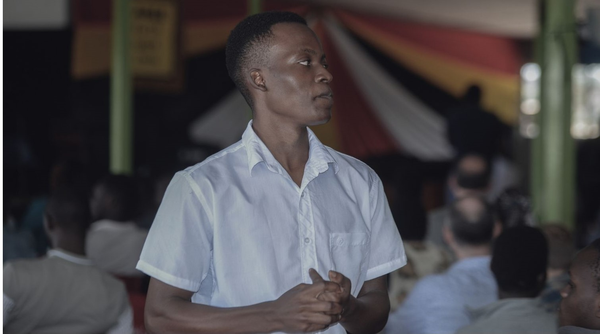

Jeckly Emmanuel Jone Mucua's website
Hello and thank you for visiting my personal website! My name is Jeckly Emmanuel Jone Mucua, and this space is where I share my thoughts, experiences, and projects with the world.
Whether you're here by chance or looking for something specific, feel free to explore. I hope you find something interesting and inspiring. If you have any questions or just want to say hello, don't hesitate to reach out.
Enjoy your time here!
- Africa Nazarene University
- Rongai , Kajiado County, Kenya
- Email: jmucua62372@anu.ac.ke
- Phone: +254 714938333
- Whatsapp: +258 877618287
- LinkedIn: Jeckly Mucua
- GitHub: Jeckly Mucua
- Microsoft Learn Profile Jeckly Mucua
- Microsoft Student Ambassador: Jeckly Mucua

Education
Diploma in Information and Technology
- Africa Nazarene University ( 2023 - till date )
- -Relevant coursework: Database Systems, Data Communication and Networking, Introduction to Programming, Object-Oriented Programming,
Concepts of Computer Applications, Computer Fundamentals, Web Based Application,
Computer Graphics, Computer Security, Computer Project,
Hardware and Software Practicum, Data Structure and Algorithms, System Analysis and Design
Skills
- Programming languages: Java, JavaScript
- Web development: HTML, CSS
- Database management: SQL, MySQL
- Version control: Git
- Word Processors: Microsoft Word, Microsoft Excel, Microsoft Powerpoint
- Operating Systems: Windows
- Others: Confident, Good Public Speaking Skills, Good Problem Solving Skills, Team Player, Easily adapt to change
Projects
Personal Webpage - Brief description of your project.
Leadership Roles
Club Welfare and International Relations Personal
Wildlife Environmental Club,Africa Nazarene University, | Sept 2023 - till date
Was part of the team that organized the tree planting on the National Tree Planting Day, where the DVC of USIU, among others, was one of the c hief guests
Entertainment Committee
Africa Nazarene Student Council, Africa Nazarene University,| Sept 2023 - till date
Was part of the team that designed the 2024 Cultural Gala Budget
Certifications:
- [Java Essentials Training: Syntax and structure], [LinkedIn Learning], [Month Yea]
- Microsoft Azure Fundamentals: Describe Cloud Concept, Microsoft Learn
- Create Machine Learning Models - Microsoft Learn
- Microsoft Azure AI Fundamentals, Microsoft Learn
Activities and Interests:
- - Member of [Wildlife Environment Club]
- - Member of Amnesty Kenya under the ANU Chapter
- - Member of the Kenya United Nations Model under the ANU chapter
- - Member of Kenya Inter-University Environmental Student Association (KIUESA)
- - Member of the Data Privacy And Governance Society of Kenya
- - Microsoft Student Ambassador
- - Attended TADHack in Partnership with Africa's Talking, 21/10/23
- - Attended Safaricom Engineering Summit Decode 2.0
- - Attended the Inaugural Digital Right Cafe - Empowering Digital Advocacy in Kenya
- - Attended the 23rd Session Leadership and Career Summit
- - Attended International Day of Peace Conference at the United Nations Headquarters in Gigiri, Nairobi
- - Attended Africa's Talking Open Hackathon Payments API
- - Attended Microsoft Africa Student Summit
- - Attended Woodtech Africa Conference
- - Participated in the KUUPA metropolitan (as an actor in both play and mashup)
- - Participated in the KUUPA nationals (as an actor in both play and mashup)
- - Registered Competitor in the Hult Prize 2024 edition
- - Football enthusiast
- - Karateka